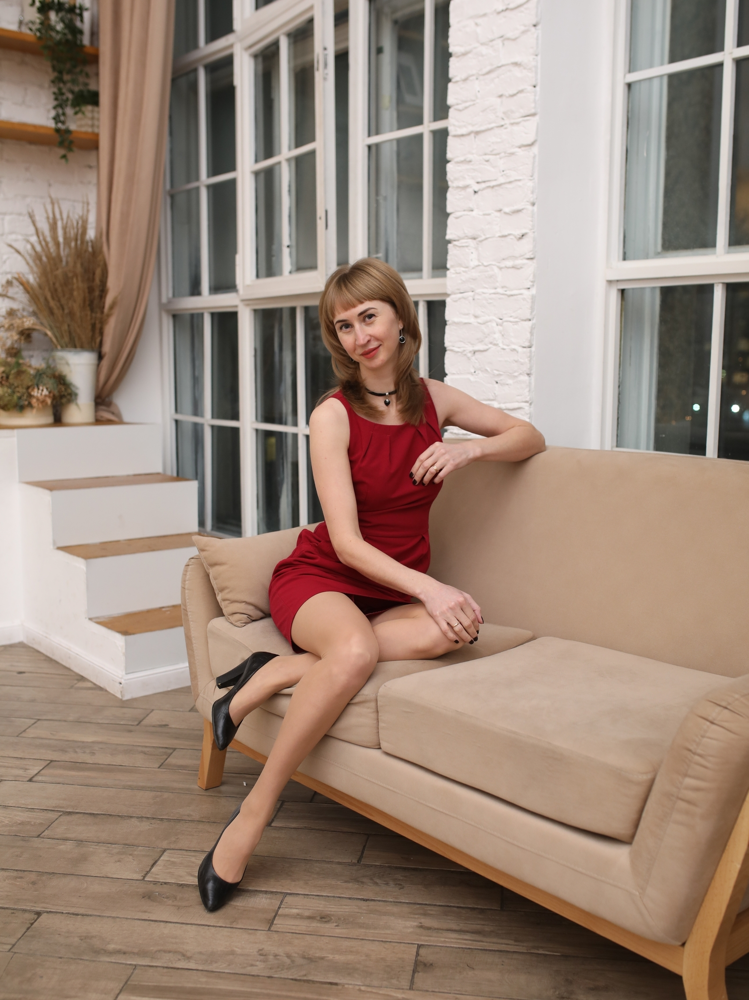
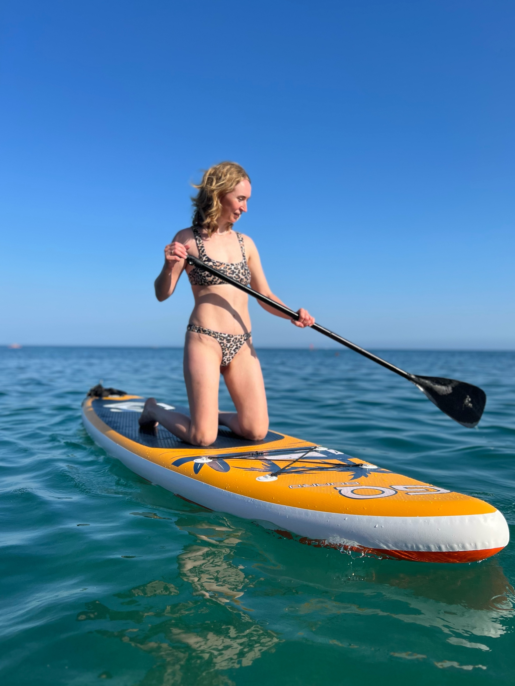
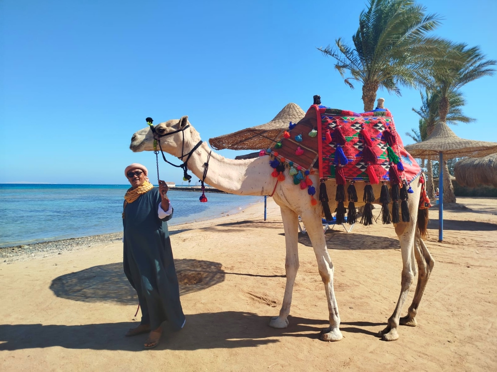
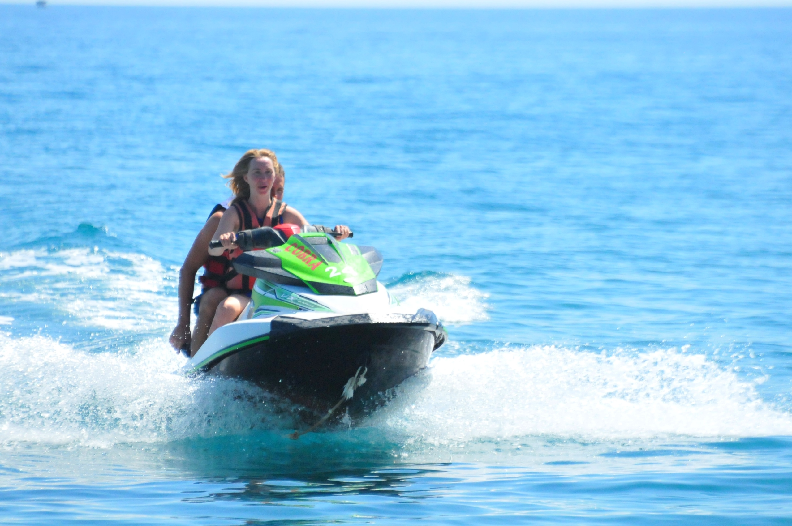

Мы взяли у нее короткое интервью:
— Расскажи, что было до курса, какой средний доход был в месяц? Сколько клиентов?
— Проходить курс я начала сразу после того, как прошла обучение на турагента. Я всегда любила путешествовать, но тут решила перевести это дело в профессиональное русло, узнать тонкости, нюансы этого ремесла,поэтому прошла курсы турагента.
Параллельно создала страницу Вконтакте, понимала, что без этого никуда, о себе нужно рассказывать. Поэтому до прохождения курса ВК-Бабло у меня по сути не было клиентов, я была в начале своего пути.
— Наталия, а можешь сказать по обучению на тревел-эксперта ? В вашем курсе не было блока по продвижению?
— Была обзорная информация по разным соц.сетям, но очень поверхностно. Я сразу решила вести ВК и наткнулась на статью Маркенинг по Брун, зацепило, прошла бесплатный курс, а там постепенно и на большой курс решилась.

— Да, именно об этом мы тоже всегда говорим, что часто блок по продвижению в проф.курсах - это просто верхушечки)
Какие-то сложности были во время обучения на нашем курсе? Насколько сложно тебе учиться? Ты ведь еще не до конца прошла все уроки?
— Мне очень курс понравился за то, что все продумано, пошагово разобрано. Что изучаешь урок, потом берешь и делаешь! Я за то, чтобы каждый занимался своим делом, поэтому не было задачи сильно углубляться в принципы работы ВК и т.д.
Главное, что хотела взять – это прикладную информацию как оформить и развивать свою страницу. Именно это и получила и очень довольна. Опять же обратная связь от Евгении очень помогла.
Но, если честно, я сейчас остановилась. Изучила все уроки по новому кабинету, принцип поняла и пока притормозила. Рекламу запускать пока не буду, хватает заявок и так.
— Рада, что с куратором у тебя сложилось все хорошо. Как считаешь, без куратора получилось бы так же?
— Однозначно нет, куратор много меня поправляла, подсказывала. Я не пожалела, что взяла тариф именно с куратором. Для меня вообще по жизни поддержка очень важна и это обучение не стало исключением ))
— Про рекламу я поняла, что она у тебя на стопе. А какие сейчас действия делаешь для привлечения клиентов? Как часто пишешь посты?
— Вот как раз сейчас занимаюсь составлением контент-плана. 3 раза в неделю посты стабильно пишу, иногда выкладываю сторис. Оставляю комментарии в тематических группах, оттуда добавляются в друзья. Первый мой клиент именно так и пришел )

— А можешь поделиться, какие изменения в себе, в своей жизни происходят с появлением клиентов?
Какие-то покупки может уже смогла сделать?
— Здесь так сложно сказать, потому что у меня есть основная работа, а работа турагентом пока на втором плане, в т.ч. и по заработку. Но очень хотелось бы довести заработок от нее на уровень и выше уровня от основной работы )) Первые заработанные 5 тыс. на туре я поставила в рамку, мне показалось это символично, буду ими мотивировать себя.
— Класс)
Все, остался только вопрос, сколько в среднем сейчас заявок в месяц, сколько клиентов?
— Заявок около 10 в месяц от разных клиентов. Бронирований оформленных 5 за месяц. Считаю, что это отличный результат с нуля. И еще думаю, что в моем деле важно заслуживать доверие, все-таки цена покупки исчисляется десятками и сотнями тысяч рублей.

— Наталия, ты молодечик! Конверсия из заявки в покупку 50%. Думаю, что с опытом все 10 будут переходить в покупку!
Спасибо тебе за ответы. Мы желаем тебе успехов и дальнейшего роста.
Скажи, что бы ты сказала тем, кто сомневается покупать курс?
— Мне уже писала девушка, спрашивала учусь ли я на курсе и могу ли его посоветовать.Я честно сказала, что да советую.
Если не хочется разбираться во всех тонкостях и нюансах вконтакте, а хочется взять, сделать и получить результат, тогда точно нужно пойти на курс!
Это именно то, что мне было нужно.
— Спасибо тебе за ответы! Удачи тебе в Новом Году!! Пусть все твои клиенты отдыхают без забот!
— Спасибо! Тебе и твоему курсу тоже процветания и удач!